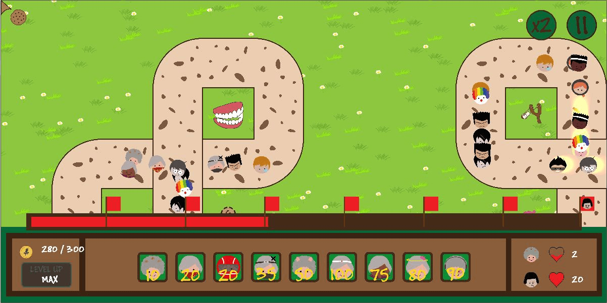
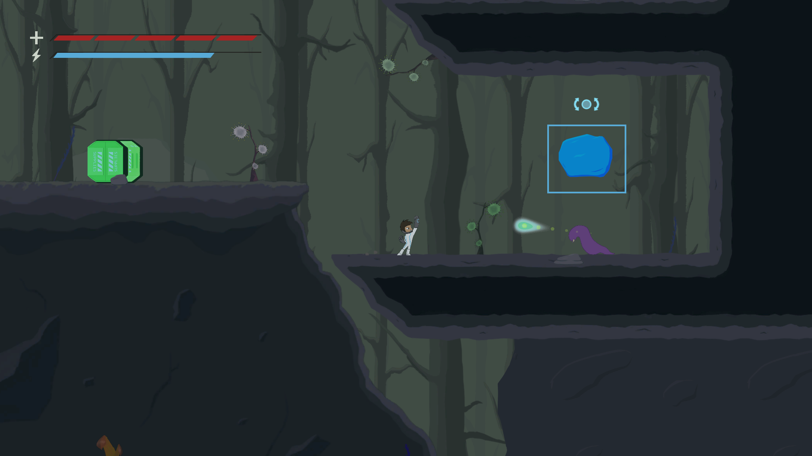
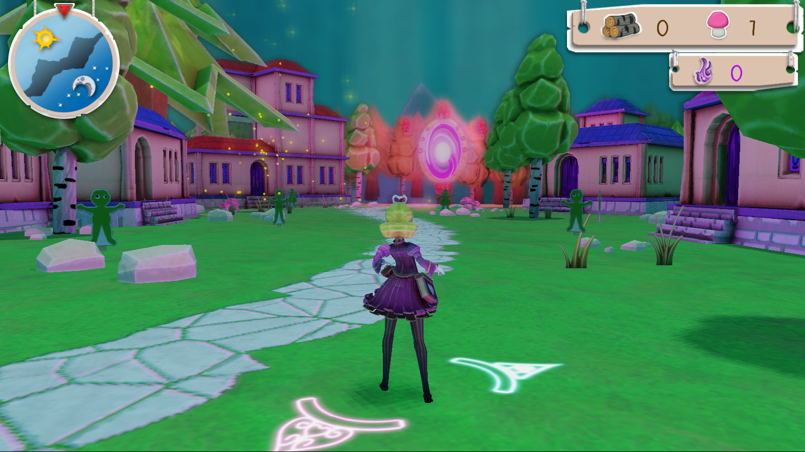

Lois Ngm
Full Stack Software Engineer
Results-oriented full stack software engineer with a strong commitment to
delivering high-quality software solutions. Adept at collaborating with
cross-functional teams to achieve project goals.
Skills
- Programming Languages: C/C++, C#, Java, Python, SQL, HTML/CSS/Javascript
- Tools: Spring Framework, Bootstrap, Ajax, Flask, OpenGL, Git, IntelliJ, Visual Studios, VSCode
- Soft skills: Communication, Leadership, Problem Solving, Time Management, Organization, Collaboration
Work Experience
Rohde & Schwarz Asia Pte Ltd, Full Stack Software Engineer - Singapore
APR 2023 - PRESENT
-
Developed a full stack application using C#, Java, WPF, .NET, Springboot Framework.
Independently identified faulty code, developed solutions and resolved incorrectness for power manager, amplifier filter
and signal control unit frequency and output adjustments.
-
Completed 2 release cycles of product testing, documenting all defects found with high level of details,
improving efficiency for developers and reducing average test time by 50%.
-
Implemented the scrum processes and methodologies as scrum master for various project teams, improving
project visibility, team collaboration and efficiency.
Shopee Singapore, Technical Project Manager - Singapore
MAY 2021 - NOV 2022
-
Oversaw digital wallet service proejcts with cross-team and third-party vendors. Efficiently handled
communications between 5+ internal and external parties, completing projects from initiation to closure
within budget and timeline.
-
Promoted team collaboration and helped foster good relationships between team members with team building
exercises and conflict management.
Projects
Get Off My Lawn

- Implemented a 2D tower defense strategy game built on school provided game engine
- Used C++ to develop an entity component system for managing game objects
ALTER

- Implemented a 2D side scrolling action game
- Winner of DigiPen Games Award, Continental Automotive Singapore Best 2D Physics Technology
-
Using OpenGL libraries and C++ to build the graphics system of the game engine, implemmented shaders,
particle systems, text rendering and gizmos for easier game level development
Marchen

- Implemented a 3D vertical tower defense action survival game
-
Using OpenGL libraries and C++ to build the graphics system of the game engine, implemented shaders,
model loading, shadow mapping and lighting
Education
BSc in Computer Science in RTIS - DigiPen Institute of Technology Singapore
Diploma in Information Technology - Ngee Ann Polytechnic